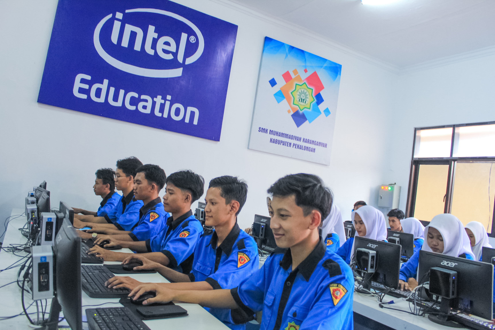
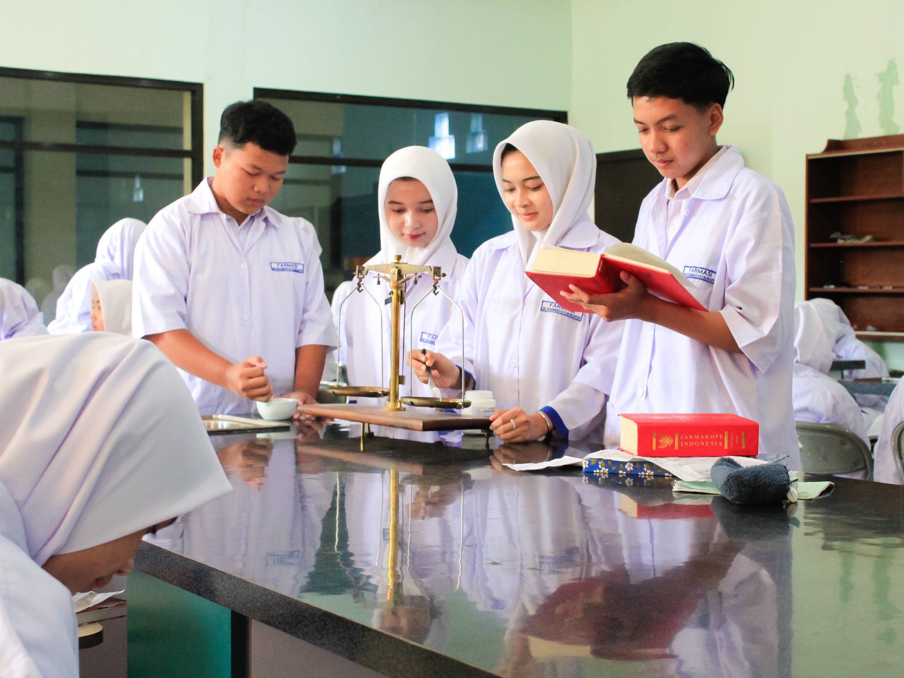
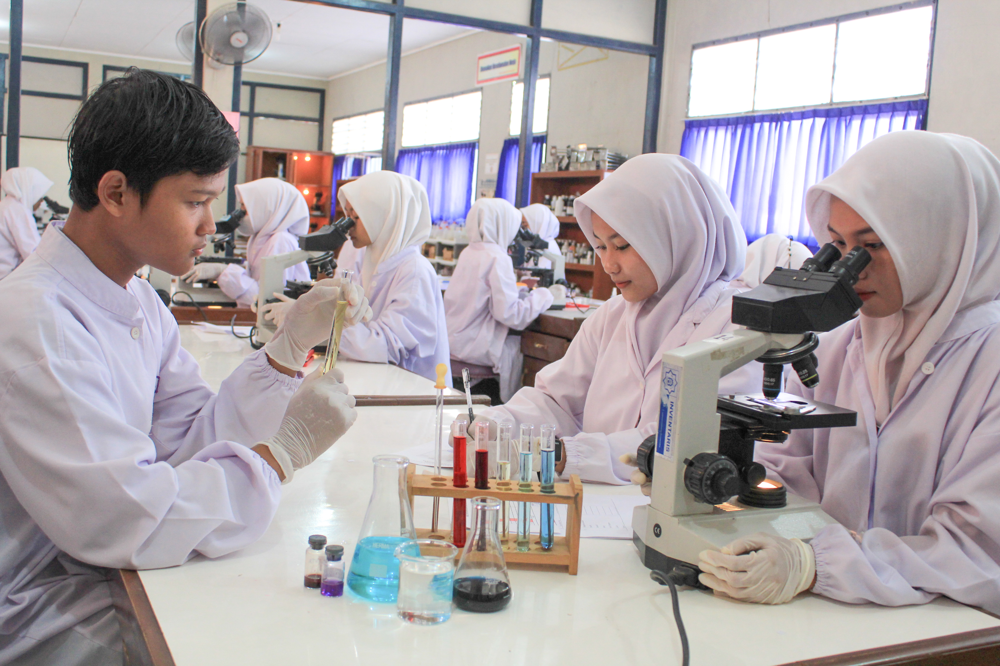
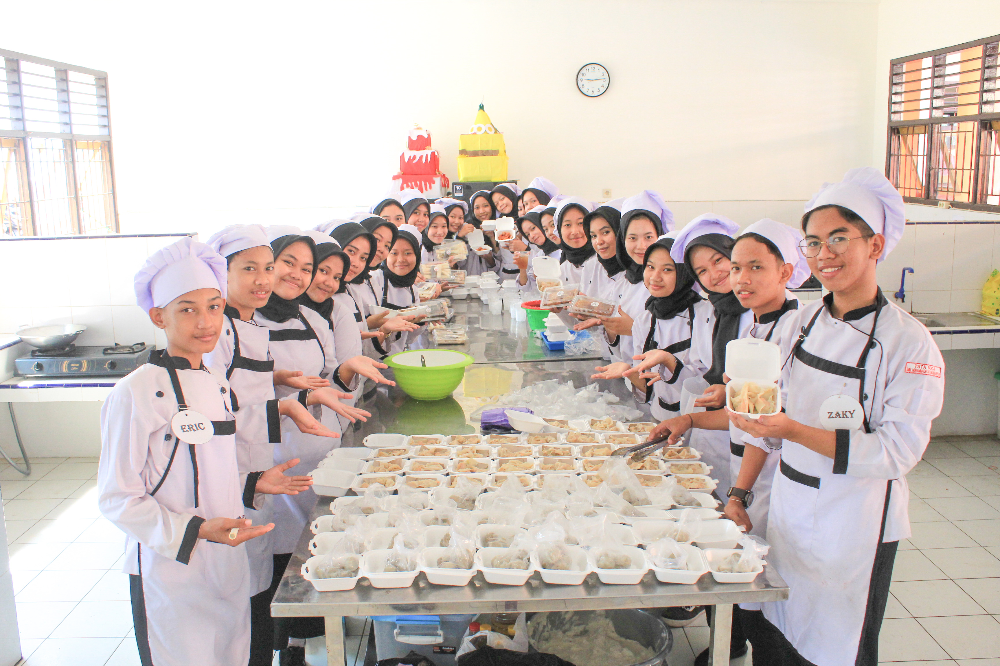

SPMB 2026/2027
Penerimaan Murid Baru
SMK Muhammadiyah Karanganyar
Kabupaten Pekalongan
Membentuk Generasi Islami, Kompeten dan Mandiri.

Membentuk Generasi Islami, Kompeten dan Mandiri.
Program Keahlian
Pembinaan Karakter Islami
Siap Kerja dan Kuliah
Pilih jurusan sesuai minat dan bakatmu

Jaringan komputer, server, mikrotik, fiber optik dan teknologi digital.

Pelayanan kefarmasian, pengelolaan obat dan kesehatan masyarakat.

Teknologi laboratorium medis dan pemeriksaan kesehatan.

Tata boga, bakery, pastry dan kewirausahaan kuliner.
Pembiasaan ibadah dan akhlak mulia.
Belajar sesuai kebutuhan dunia kerja.
Tenaga pendidik berpengalaman dan kompeten.
Lulusan siap bersaing di masa depan.
Lengkapi formulir pendaftaran online.
Panitia memeriksa data pendaftaran.
Dihubungi oleh panitia SPMB.
Melengkapi administrasi dan registrasi.
Bergabunglah bersama SMK Muhammadiyah Karanganyar Kabupaten Pekalongan.